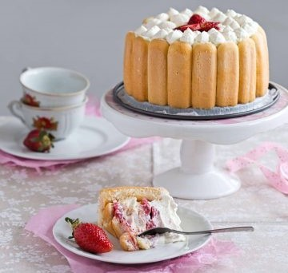

Carlota de manzana

Ingredientes
- 2 barras de queso crema
- 1/2 tazas de leche condensada
- 3/4 tazas de mazapán untable
- 1/4 tazas de leche evaporada
- 1 cucharada de esencia de vainilla
- 3 tazas de crema batida
- 3 tazas de galletas de vainilla
- Al gusto de chocolate, derretido, para decorar
- Al gusto de mazapán, para decorar
Cómo hacer helado de fresa:
- Mezcla el queso crema, la leche condensada, el mazapán untable, la leche evaporada y la esencia de vainilla hasta integrar. Posteriormente, incorpora la crema batida con un miserable. Reserva.
- Acomoda una capa de galletas en un aro para repostería, vierte un poco de la preparación anterior y repite el proceso hasta terminar con la mezcla de mazapán.
- Refrigera la carlota durante 2 horas.
- Desmolda la carlota de mazapán y decora con chocolate y mazapanes.